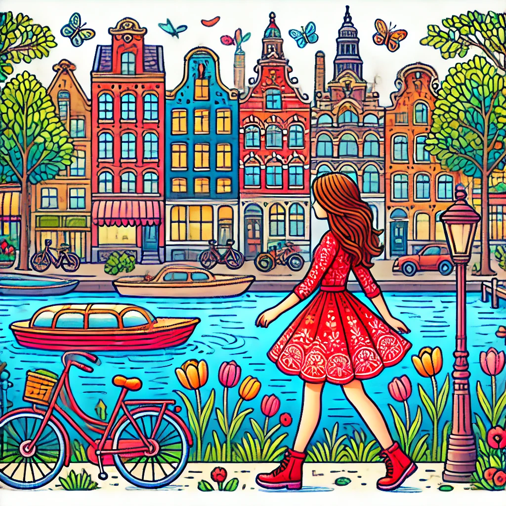

Очарование ночного Амстердама
Картины в стиле Ван Гога дарят возможность увидеть Амстердам через призму творчества великого художника. Яркие цвета, экспрессивные мазки и захватывающие виды.
Волшебство ночи на улицах Амстердама, вдохновленное звездами, тюльпанами и извилистыми каналами города. Каждый шаг — это искусство.

Почувствуйте дыхание Ван Гога в каждом уголке города — уникальный стиль великого мастера захватывает и переносит вас в мир искусства.